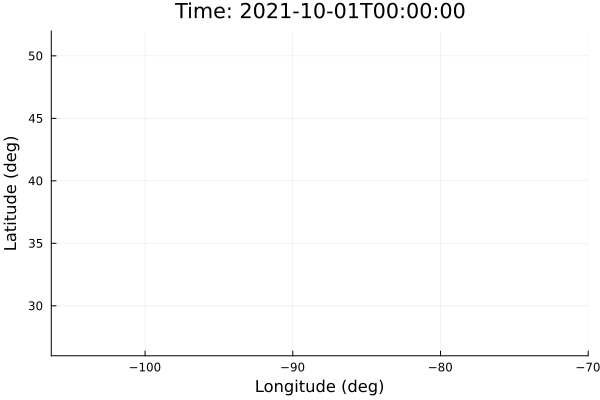

using EarthSciMLBase, EarthSciData, EnvironmentalTransport
using ModelingToolkit
using ModelingToolkit: t
using DynamicQuantities
using DifferentialEquations
using Plots
using Dates
firestart = DateTime(2021, 10, 1)
firelength = 15 * 24 * 3600 # Seconds
simulationlength = 20 # Days
firelon = deg2rad(-97)
firelat = deg2rad(40)
fireradius = deg2rad(0.05) # Degrees
samplerate = 3600.0 # Seconds
samples_per_time = 1 # Samples per each emission time
fireheight = 2.0 # Vertical level (Allowing this to be automatically calculated is a work in progress).
emis_rate = 1.0 # kg/s, fire emission rate
sim_end = firestart + Day(simulationlength)
domain = DomainInfo(
firestart, sim_end;
lonrange = deg2rad(-115):deg2rad(1.25):deg2rad(-68.75),
latrange = deg2rad(25):deg2rad(1):deg2rad(53.7),
levrange = 1:72
)
geosfp = GEOSFP("4x5", domain; stream = false)
puff = Puff(domain)
model = couple(puff, geosfp)
const sys = convert(System, model)
u0 = ModelingToolkit.get_defaults(sys)
tspan = EarthSciMLBase.get_tspan(domain)
prob=ODEProblem(sys, u0, tspan)
sol = solve(prob, Tsit5()) # Solve once to make sure data is loaded.
function prob_func(prob, i, repeat)
r = rand() * fireradius
θ = rand() * 2π
u0 = [
sys.Puff₊lon => firelon + r * cos(θ),
sys.Puff₊lat => firelat + r * sin(θ),
sys.Puff₊lev => fireheight
]
ts = (tspan[1] + floor(i / samples_per_time) * samplerate, tspan[2])
remake(prob, u0 = u0, tspan = ts)
end
eprob = EnsembleProblem(prob, prob_func = prob_func, safetycopy = false)
esol = solve(eprob, Tsit5(); trajectories = ceil(firelength/samplerate*samples_per_time))
vars = [sys.Puff₊lon, sys.Puff₊lat, sys.Puff₊lev]
varidxs = ModelingToolkit.variable_index.((sys,), vars)
ranges = [(Inf, -Inf), (Inf, -Inf), (Inf, -Inf)]
for sol in esol
for (i, var) in enumerate(vars)
rng = (minimum(sol[var]), maximum(sol[var]))
ranges[i] = (min(ranges[i][1], rng[1]),
max(ranges[i][2], rng[2]))
end
end
t_ref = get_tref(domain)
anim = @animate for dt in datetime2unix(firestart):samplerate:datetime2unix(sim_end)
t = dt - t_ref
p = plot(
xlim = rad2deg.(ranges[1]), ylim = rad2deg.(ranges[2]), zlim = ranges[3],
title = "Time: $(unix2datetime(t + t_ref))",
xlabel = "Longitude (deg)", ylabel = "Latitude (deg)",
zlabel = "Vertical Level"
)
for sol in esol
if t < sol.t[1] || t > sol.t[end]
continue
end
lon, lat, lev = sol(t)[varidxs[1]], sol(t)[varidxs[2]], sol(t)[varidxs[3]]
color = lev < 2 ? :red : :black
scatter!(p,
[rad2deg(sol(t)[varidxs[1]])], [rad2deg(sol(t)[varidxs[2]])], [sol(t)[varidxs[3]]],
label = :none, markercolor = color, markerstrokecolor = color, markersize = 1.5
)
end
end
gif(anim, fps = 15)
